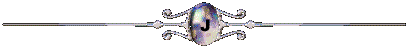

| RELIGIOUS CONSPIRACY: the Curse of Nag Hammadi |
| A cursed book unearthed in 1945 in Nag Hammadi is at the centre of a cover-up masterminded by a fundamentalist organisation. The censorship is still in force. The existence of this book is sure to put certain noses out of joint! The 'official' version
mentions 13 codices in the Coptic Nag Hammadi library, dating back to the 4th century.
But the truth is that there's a
14th manuscript that no-one speaks about and for good reason: codex 14
went from one notorious trafficker to another, before mysteriously
disappearing in 1975. The case is shrouded in mystery! No valid investigation has yet been conducted, which proves that the case has put some people in a particularly awkward situation! Even the Vatican has been reluctant to undertake any sort of investigation in its own ranks! That's why I've done my own research
on the subject, and I can now reveal the truth about
the missing manuscript of Nag Hammadi. |
| > The Mystery of the Missing Codex |
| Let's
take things from the beginning. As soon as the Nag Hammadi library was discovered,
its manuscripts were dispersed to the four corners of the earth.
Some works fell into the hands of notorious traffickers before
being reunited in Cairo several years
after they were first discovered. One work in particular, which we'll call codex 14, has never been officially listed. It was originally part of Dattari's collection and changed hands several times. Strangely enough, each owner of the work came under pressure from some mysterious organisation looking to lay its hands on the manuscript at all costs. Two of the owners met a violent end; the book subsequently gained a reputation as being cursed. In 1973, a German research scientist managed to acquire it by convincing the daughter of a collector to sell it to him (the photo below was found during my investigation). |
 |
| He also disappeared along with the book two years later. Since then, there hasn't been the slightest trace of the missing book. All this talk of a curse seems to be a convenient excuse! I reckon that the truth can be found in the very contents of the work. According to my sources, the German scientist was getting ready to go public with the work, which obviously cost him his life. So does the manuscript in question contain some sort of truth that's been hidden for centuries and that someone wants to keep quiet? Who could be worried about such a revelation? To understand, you need to focus on the contents of the other codices. Of these works, the one known as the Gospel According to Thomas (codex II) puts words in Jesus' mouth that are far from agreeing with the official doctrine. Apparently, the Church hampered its publication. But things get even more mysterious: the close relationship between these Christian works and other esoteric texts is puzzling. Magic and Christianity both in the same book is definitely something that would get tongues wagging! It appears that the revelation of these works was deliberately held back by some similar institution or other that dragged its feet over requests to consult the works and even took legal proceedings against the translators and critics! I'd watch out if I were you, as this extremist faction seems to have slithered its way into every institution and uses its influence at every level! That's why it took the scientists 30 years to publish the contents of the books. This inordinate amount of time is proof of a deliberate attempt to hide the truth! But what truth? It's more a question of unexplained mysteries! "Whoever discovers the interpretation of these sayings will not taste death"! The Apocryphon of John announced, "Cursed be anyone who exchanges these things [secrets] for a gift, or for food, or for drink, or for clothing or for any other such thing"!
Obviously, the prospect of this work being revealed to the public is enough to make the most extremist fringe groups of the Catholic church tremble, who believe that such blasphemous works must on no account be published. The stakes involved are immense: a work that would challenge the very foundations of Catholicism. Now that's something to stir up a real hornet's nest of Catholic extremists! The rumour goes that the cursed book is in the hands of a secret society looking to bury its occult revelations forever. This society's influence is such that the Vatican, under duress, had to adopt a policy of disinformation by omission! Let's take action against this conspiracy of silence and the unorthodox behaviour of this extremist militia! The historical truth must rise up from the ages, even if it means taking on the most conservative, narrow-minded adversaries! The conspiracy of silence must be broken and the contents of the 14th codex revealed to us all!
|
 |